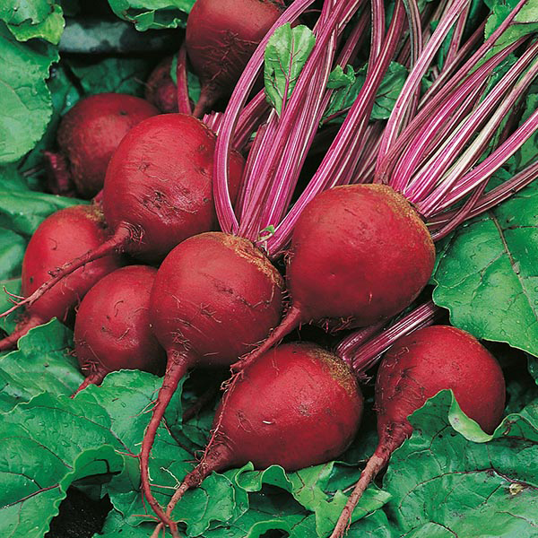

PLANT VARIANTS
Click image to view details of each plant.
French Beans
Scientific Name: Phaseolus Vulgaris
Seasons Cultivated: cool season
Fertilizer used: farm yard manure, NPK
Soil Parameters: sandy to heavy clay, light alluvial
pH value: 5.5 to 6.5
Temperature (celsuis): 15 to 30
Cabbage
Scientific Name: Brassica Oleracea
Seasons Cultivated: cool, moist climate, winter
Fertilizer used: manure or compost, nitrogen and phsphorous, ammonium sulphate, borax
Soil Parameters: sandy loam to clay
pH value: 5.5 to 6.5
Temperature (celsuis): 18 to 20
Rainfall (mm): 380 to 500
Tomato
Scientific Name: Solanum Lycopersicum
Seasons Cultivated: warm seasons
Fertilizer used: rotten organic matter like cowdung, carbofuran or neem cake
Soil Parameters: clay loam to silt loam, or well drained sandy loam
pH value: 7 to 8
Temperature (celsuis): 21 to 30
Rainfall (mm): 50 to 150
Eggplant
Scientific Name: Solanum Melongena
Seasons Cultivated: warm season
Fertilizer used: rotten farmyard manure, nitrogen, phosphorous
Soil Parameters: well drained, rich, clay
pH value: 5 to 7
Temperature (celsuis): 20 to 28
Spinach
Scientific Name: Spinacia Oleracea
Seasons Cultivated: winter, mild temperature
Fertilizer used: farmyard manure, Nitrogen, P2O5
Soil Parameters: sandy loam
pH value: 6 to 7.5
Temperature (celsuis): 15 to 20
Beetroot
Scientific Name: Beta Vulgaris
Seasons Cultivated: monsoon, year in if enough water present
Fertilizer used: organic manure and inorganic fertilizers, NPK
Soil Parameters: well drained, loose, loamy to sandy
pH value: 6 to 7
Temperature (celsuis): 18 to 25
Orange
Scientific Name: Citrus sinensis
Seasons Cultivated: spring, from March to April
Fertilizer used: phosphorous and complete fertilizers
Soil Parameters: high hammock or pineland that drains well
pH value: 6 to 7.5
Temperature (celsuis): 12 to 37
Chilli
Scientific Name: Capsicum Annuum L
Seasons Cultivated: warm, hot and humid
Fertilizer used: NPK
Soil Parameters: well drained loamy soils
pH value: 5.5 to 6.8
Temperature (celsuis): 20 to 30
Capsicum
Scientific Name: Capsicum Annuum
Seasons Cultivated: before monsoon, or year in in greenhouse
Fertilizer used: farm yard manure, NPK
Soil Parameters: well drained, clay loam soil
pH value: 5.5 to 7
Temperature (celsuis): 22 to 25
Cucumber
Scientific Name: Cucumis Sativus
Seasons Cultivated: moderate warm temperature
Fertilizer used: well decomposed farmyard manure, nitrogen, phosphorous
Soil Parameters: sandy loam, clay loam
pH value: 6 to 7
Temperature (celsuis): 20 to 26
Carrot
Scientific Name: Daucus Carota
Seasons Cultivated: cool season
Fertilizer used: rotten farmyard manure, NPK, ZnSO4
Soil Parameters: deep, loose, loamy
pH value: 6 to 7.5
Temperature (celsuis): 17 to 24
Mint
Scientific Name: Mentha
Seasons Cultivated: hot and sunny
Fertilizer used: farm yard manure, NPK
Soil Parameters: red or black soil, sandy loam or loam
pH value: 6 to 8.5
Temperature (celsuis): 20 to 40
Rainfall (mm): 100-120
Sweet Potato
Scientific Name: Ipomoea Batatas
Seasons Cultivated: warm and humid climate
Fertilizer used: composed nitrogen, P2O5, K2O
Soil Parameters: loose friable soil
pH value: 5.8 to 6.6
Temperature (celsuis): 22 to 28
Rainfall (mm): 75 to 150
Lettuce

Scientific Name: Lactuca Sativa
Seasons Cultivated: cool season
Fertilizer used: garden composed, NPK
Soil Parameters: rich friable and well drained
pH value: 5.8 to 6.5
Temperature (celsuis): 12 to 20
Cassava
Scientific Name: Manihot Esculenta
Seasons Cultivated: warm, humid
Fertilizer used: organic manure, NPK
Soil Parameters: deep sandy loam soils
pH value: 5.5 to 6.5
Temperature (celsuis): 25 to 30
Rainfall (mm): 600 to 4000
Ridge Gourd
Scientific Name: Luffa
Seasons Cultivated: throughout the year
Fertilizer used: well decomposed farmyard manure, nitrogen, phosphorous
Soil Parameters: well drained sandy loam soil
pH value: 6 to 7.5
Temperature (celsuis): 24 to 30